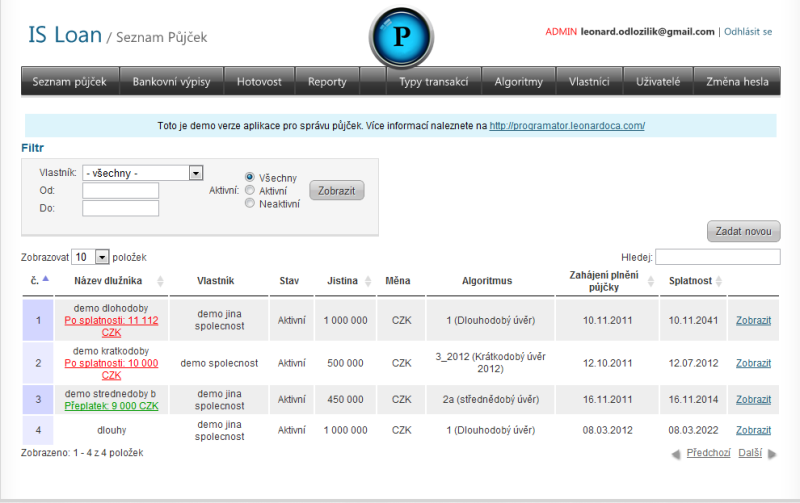
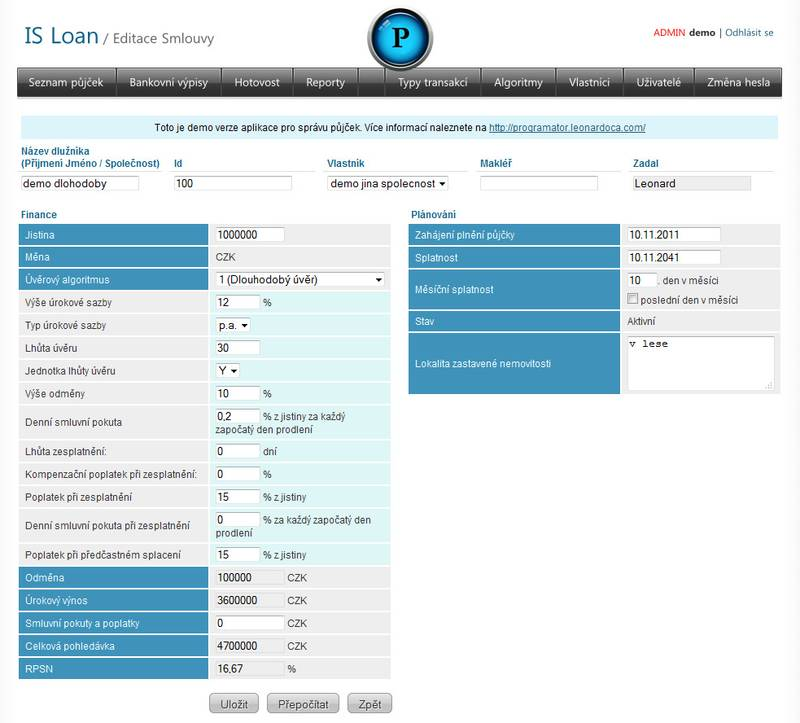
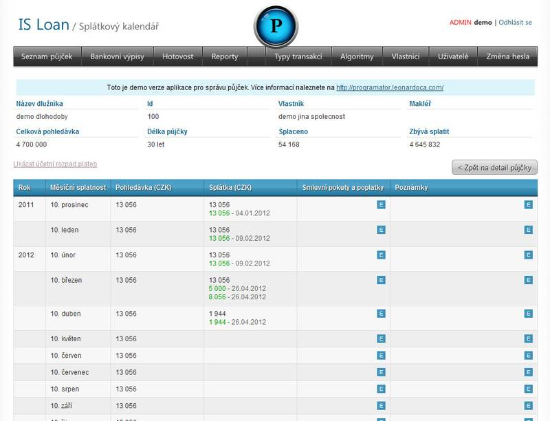
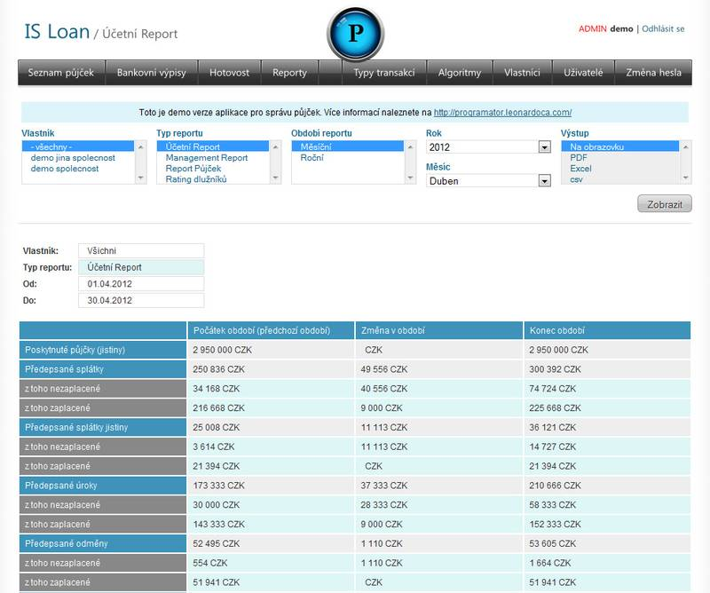
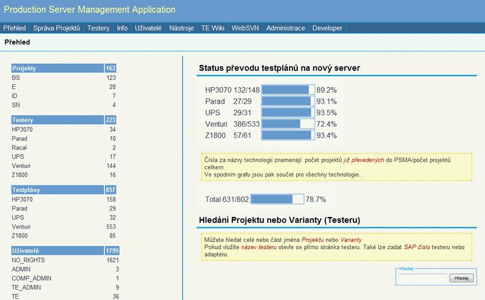
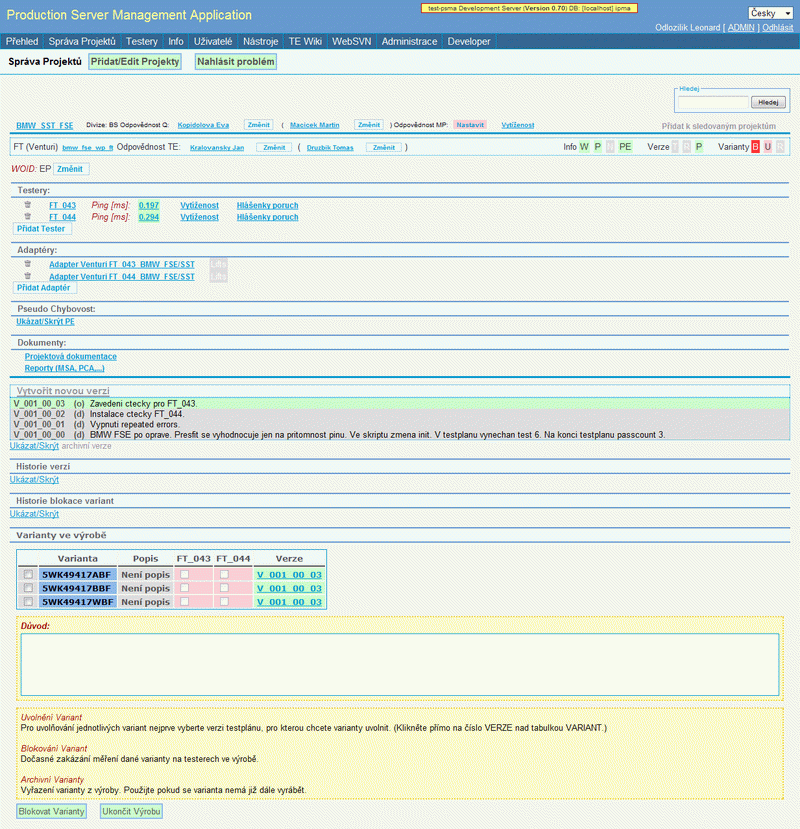
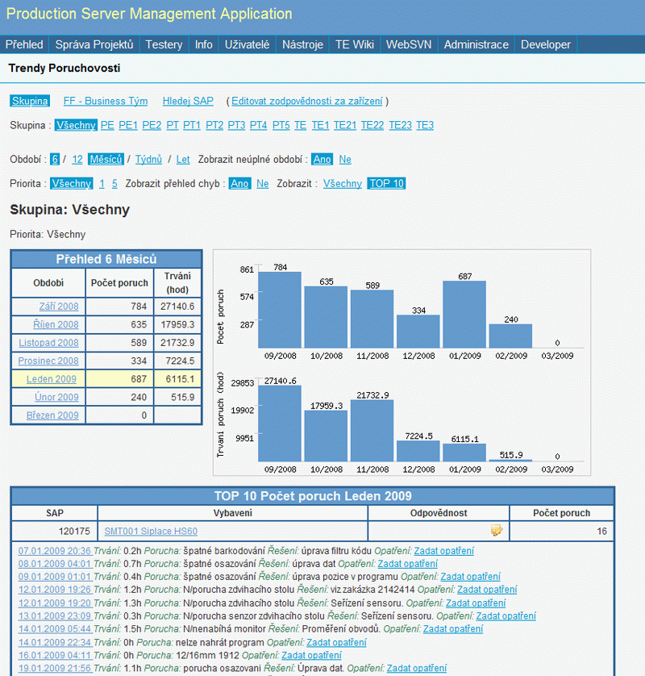
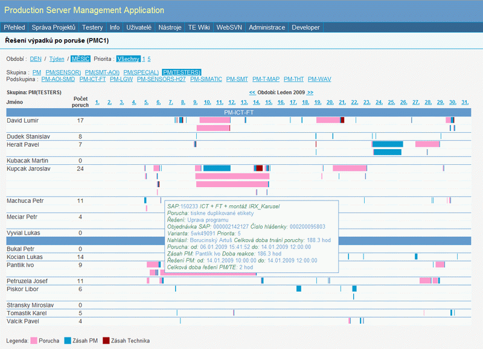

Zkušenosti
Během let jsem získal zkušenosti v oblastech
- Backend: PHP, Nette, MySQL, Oracle
- Frontend: HTML, CSS, jQuery, AJAX, Bootstrap
- Jiné: Linux, Git, Grunt, REST API, SOAP, PDF
- Programovací jazyky: C, C++
- Další zkušenosti:
-
- Bezpečnost a přístupnost webových aplikací
- Správa serverů (Linux)
- Replikace a zálohování databází
- Sběr a sdílení dat v hybridních systémech: windows, linux, dos, hp-unix
- Programování aplikací v průmyslové sériové výrobě
- Ovládám: Angličtinu (plynule), Němčinu (dobře)
Občas něco napíšu
Nabízím
Osobní přístup a profesionální řešení
- Analýzu, návrh a vývoj webových aplikací na míru
- Přehledné uživatelské rozhraní
- Datové navázání na jiné systémy
- Optimalizaci výkonu
- Řešení zálohování, replikace databází
- Následnou správu a podporu provozovaných systémů
Kontakt
- Leonard Odložilik
- Štefánikova 1163
- 74221 Kopřivnice
- email: leonard.odlozilik@gmail.com
- IČ: 87080192
Reference
ISloan - správa půjček
ISloan je aplikace pro správu půjček, včetně párování plateb z bankovních účtů. Eviduje smlouvy více společností. Generuje účetní reporty. Přehled dlužníků, atd...
Použité technologie - PHP(Nette),MySQL,jQuery
Přehled půjček s možností rychlého vyhledávání, včetně zobrazení aktuálních částek po splatnosti nebo přeplatků.
Editace půjček na základě předdefinovaných algoritmů pro různé typy úvěrů. Formulář pro zadávání půjčky automaticky dopočítává výši úroků, odměny a celkové pohledávky, včetně RPSN.
Splátkové kalendáře jsou generovány automaticky. Platby jsou do nich připisovány po importu bankovních výpisů nebo po vložení plateb v hotosti. Párování plateb probíhá automaticky, pokud je možné platbu identifikovat, jinak je možnost ručního spárování platby.
Účetní report, managment report, přehled dlužníků....
Aplikace PSMA
PSMA je intranetová aplikace řešící správu měřících programů ve výrobě - verzování, uvolňování, archivaci, nastavení práv souborů na připojovaných síťových discích. Kromě toho slouží jako databáze konfigurace jednotlivých testerů. Generuje požadavky na údržbu jehliček, podle počtu zdvihů. Zobrazuje různé statistiky a přehledy týkající se vytížení a chybovosti.
Použité technologie - PHP,MySQL,Linux,AJAX
Přehled počtu projektů a jejich uvolnění přes aplikaci PSMA.
Přehled stavu uvolnění verzí a variant na jednotlivých testerech, historie - možnost uvolňovat blokovat varianty, nové verze testplánu, atd...
Vytvořeno na základě zakázek PMC1 exportovaných z SAP. Zobrazení počtu a doby trvání poruch za určité časové období - filtry dle skupin, priority, business týmů, možnost zobrazit detail hlášenky, či historii konkrétního zařízení.
Přehled řešení poruch v čase a vytíženosti jednotlivých členů údržby. Graf je řešen pomocí css a po najetí myší na určitý časový úsek se zobrazí detail hlášenky.
